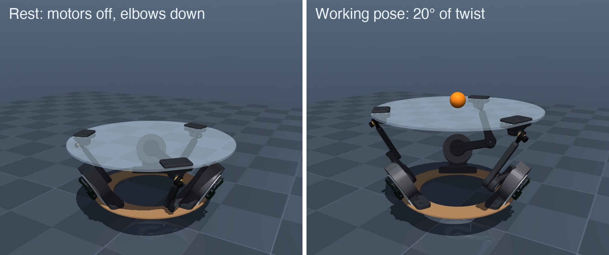
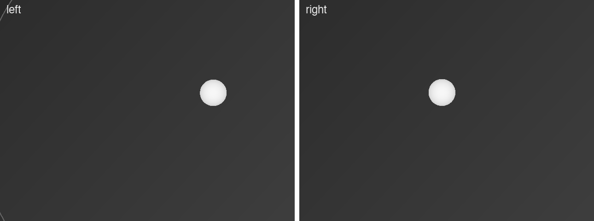
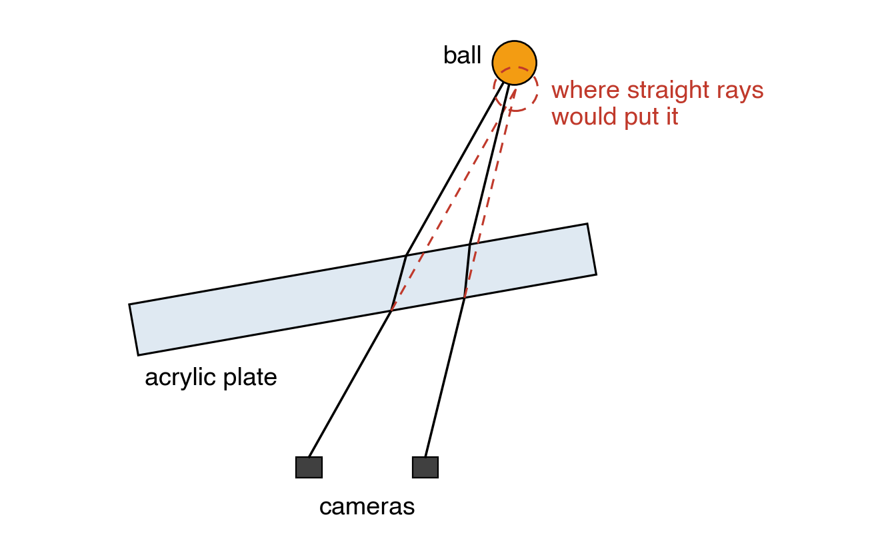
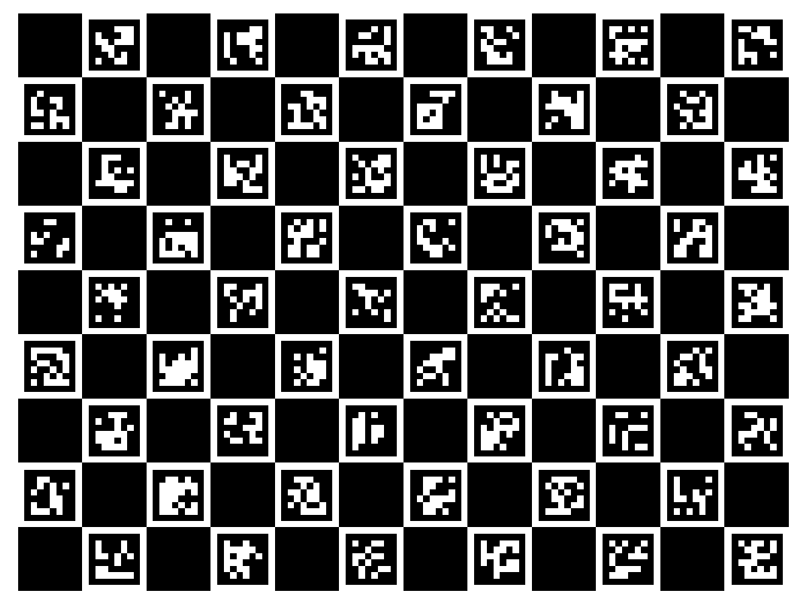

A ball-balancing robot
This is a three-motor platform that balances a ping-pong ball on a clear plate, rolls it around, and bounces it. Two cameras under the plate track the ball in 3D at 200 frames a second.
The robot is built and the software is written, but the controller has only run in simulation so far, and the videos and numbers on this page are from the simulator. I’ll add photos and video of the real robot as I get them.
From a wrist to a platform
The robot started as my spherical wrist from 2023, which could only rotate about a point. I adapted it into a platform. Each motor now swings a crank, and a rod with a ball joint on top joins the crank to a round acrylic plate.
Bir Parkash got it balancing a ball first, with one camera and a PD controller in Python, and has a write-up of that version. I wanted to see how far it could go with faster cameras and a model of the ball, so the vision and control here are new.

| Motors | Three EaglePower 8308s, direct drive, the same motor as in my haptic bow demo |
|---|---|
| Drives | moteus r4.11, on CAN from a Linux PC with a PEAK card |
| Plate | 6.35 mm clear acrylic |
| Cameras | Two Point Grey Dragonfly Express under the plate, each on its own FireWire bus, triggered together by a Nucleo board at 200 Hz |
| Ball | 40 mm ping-pong ball |
There are no homing switches. With the motors off, the plate drops until the cranks sit on the base with the elbows down, and I take that pose as the encoder zero.
A plate that can’t move straight up
In each leg the crank and the rod turn about parallel axes, so the ball joint at the top stays in one plane, the plane normal to the motor axis \(\mathbf{a}_i\). Put the plate at rotation \(R\) and translation \(\mathbf{t}\) from its home pose, with ball joint \(i\) at \(\mathbf{s}_i\) from the plate’s centre. Each joint staying in its plane gives
\[ \mathbf{a}_i \cdot \big(\mathbf{t} + (R - I)\,\mathbf{s}_i\big) = 0, \qquad i = 1, 2, 3 . \]That is three linear equations for \(\mathbf{t}\). On the usual three-leg platform the motor axes are horizontal, the three \(\mathbf{a}_i\) lie in one plane, and the equations leave the height free and pin the twist. That gives heave, roll and pitch.
Mine came from a spherical wrist, so its motor axes tilt up at \(\alpha = 30^\circ\) and meet at a point. Then the \(\mathbf{a}_i\) span all three directions, any rotation \(R\) is allowed, and \(\mathbf{t}\) follows from it. I get roll, pitch and twist, and no heave, which is the one motion bouncing a ball needs.
The way out is the twist. With the ball joints at radius \(\rho = 202\) mm, solving the equations for a pure twist \(\psi\) gives
\[ z(\psi) = -\rho \cot\alpha\,(1 - \cos\psi) \;\approx\; -\tfrac{1}{2}\,\rho\cot\alpha\;\psi^2 , \]so the plate drops as it twists, by 175 mm per radian squared. At \(\psi = 0\) the slope is zero and a small twist does nothing. I run the plate at 20° of twist instead, where each degree moves it 2 mm. Twisting back raises the plate and twisting further lowers it, and that is the stroke that hits the ball. The fastest strike I allow, 0.8 m/s, takes a twist rate of about 390°/s.

The twist isn’t free. A ball that lands off centre on a twisting plate gets dragged sideways a little, and the bounce planner has to allow for it.
Seeing the ball through the plate
The cameras sit under the plate and look up through it, so nothing above the plate gets in the way of the ball. The tracker is C++ on libdc1394 and OpenCV.
In each image it finds the ball’s outline. Every outline pixel is a ray, from a point \(\mathbf{o}_j\) along a direction \(\mathbf{d}_j\), that just grazes the ball. So the ball is the sphere, with centre \(\mathbf{c}\) and radius \(r\), that all the rays from both cameras touch:
\[ \min_{\mathbf{c},\,r}\; \sum_j \Big( \big\lVert (\mathbf{c} - \mathbf{o}_j) \times \mathbf{d}_j \big\rVert - r \Big)^2 . \]A few Gauss–Newton steps solve it. Fitting the radius as well means a threshold that eats into the ball’s edge doesn’t move the centre, and a radius far from the ball’s tells me the two cameras matched the wrong blobs.

The acrylic bends those rays. A ray that meets a plate of thickness \(d\) and index \(n = 1.49\) at an angle \(\theta\) comes out parallel to itself but shifted sideways by
\[ \Delta = d\,\sin\theta \left( 1 - \frac{\cos\theta}{\sqrt{n^2 - \sin^2\theta}} \right) , \]which is 1.2 mm at 30° and 2.1 mm at 45° for my 6.35 mm plate. The shift depends on the plate’s tilt, and the plate tilts while the robot runs. So the controller sends the tracker the plate’s tilt, and the tracker moves each ray’s origin \(\mathbf{o}_j\) by its shift before the fit.

I calibrate the pair with a ChArUco board, with the acrylic taken off. A ChArUco board is a chessboard with a numbered marker in every white square, so each corner can be identified even when only part of the board is in view, and that lets me fill the corners of both images.

Knowing where the ball is now
A camera frame is about 6 ms old by the time the controller has it, and at 2 m/s the ball moves 12 mm in that time. A Kalman filter tracks the ball and predicts it forward to the present. It has a model for each thing the ball does: rolling on the plate, flying, and hitting the plate.
In flight a ping-pong ball is light enough that drag matters:
\[ \dot{\mathbf{v}} = \mathbf{g} - k\,\lVert\mathbf{v}\rVert\,\mathbf{v}, \qquad k = \frac{\rho_\text{air}\,C_d\,A}{2m} \approx 0.13\ \text{m}^{-1} , \]which at 2 m/s is already 5% of gravity.
The filter also has to know how good each measurement is. With focal length \(f\) and baseline \(b\), a stereo pair that is off by \(\sigma_d\) in disparity is off in depth by
\[ \sigma_z = \frac{z^2}{f\,b}\,\sigma_d , \]so depth gets worse with the square of the distance. The cameras are close to the plate, so a ball 200 mm up is measured about five times less precisely than one resting on it, and the filter weights each measurement accordingly.
Balancing
A ball rolling on a tilted plate accelerates down the slope. Write \(\mathbf{n}\) for the horizontal part of the plate’s normal, which points to the low side. If the surface under the ball also moves sideways by \(\mathbf{s}\), a ball with moment of inertia \(\beta m r^2\) rolling without slipping follows
\[ \ddot{\mathbf{x}} = \frac{1}{1+\beta}\,g\,\mathbf{n} + \frac{\beta}{1+\beta}\,\ddot{\mathbf{s}} . \]A ping-pong ball is a hollow shell, \(\beta = \tfrac{2}{3}\), so the factors are \(\tfrac{3}{5}\) and \(\tfrac{2}{5}\), not the \(\tfrac{5}{7}\) and \(\tfrac{2}{7}\) of a solid ball.
The second term matters here because of the mechanism. Solving the leg equations for a small tilt gives \(\mathbf{t} = -\rho\tan\alpha\;\mathbf{n}\): the plate turns about a point \(\rho\tan\alpha = 116\) mm above the ball joints, which is \(c = 88\) mm above its own surface. So tilting the plate slides the surface toward the high side, \(\mathbf{s} = -c\,\mathbf{n}\), about 1.5 mm per degree. (At 20° of twist the slide also turns partly sideways; the controller uses the exact numbers.) From tilt to ball position that makes
\[ \frac{X(s)}{N(s)} = \frac{3g}{5\,s^2} - \frac{2c}{5} = -\frac{2c}{5}\cdot\frac{s^2 - \dfrac{3g}{2c}}{s^2} , \]which has a zero in the right half-plane at \(\sqrt{3g/2c} \approx 13\) rad/s. In plain terms, when the plate tilts to send the ball one way, the surface first carries it a little the other way. My first controller ignored that and oscillated.
The fix is a change of variable. With \(\boldsymbol{\xi} = \mathbf{x} + \tfrac{2}{5}\,c\,\mathbf{n}\), the slide cancels and
\[ \ddot{\boldsymbol{\xi}} = \tfrac{3}{5}\,g\,\mathbf{n} , \]a plain double integrator. Balancing is an LQR on \(\boldsymbol{\xi}\), its rate and its integral, together with the tilt and tilt rate.
The second version held the ball well but was twitchy, because camera noise went straight to the motors, and I didn’t want that on real hardware. The tilt command now passes through a critically damped second-order filter with a 60 ms time constant, which is why tilt and tilt rate are states in the LQR. Target moves are jerk-limited, and crank speed and acceleration are capped. In simulation it holds the ball to about 0.1 mm and recovers from 60 mm off centre in about a second.
Gravity calibration
Holding the plate up shouldn’t need stiff motor gains, so the weight of the plate and legs is fed forward. The holding torque is linear in the masses and mass moments of the plate, cranks and rods, \(\boldsymbol{\tau} = Y(\mathbf{q})\,\boldsymbol{\pi}\), with 22 parameters in \(\boldsymbol{\pi}\), and I fit them with a method from my haptic wrist library.
The plate moves through about 40 poses and stops at each one twice, once coming from each side. Friction opposes the motion, so the two readings are \(\tau_g + \tau_f\) and \(\tau_g - \tau_f\). Their average is the gravity torque, and half their difference is the friction, which I get for free. A least-squares fit, pulled gently toward the CAD values where the data say little, gives \(\boldsymbol{\pi}\). With that fed forward, gains as soft as 10 N·m/rad work.
Bouncing
Each impact is planned while the ball is in the air. At the impact the plate moves up at \(u\), the ball arrives at \(v^-\) (negative, since it is falling) and leaves at \(v^+\), and with restitution \(e\)
\[ v^+ - u = -e\,(v^- - u) \quad\Longrightarrow\quad u = \frac{v^+ + e\,v^-}{1 + e} . \]For a steady bounce \(v^- = -v^+\), so \(u = v^+\,(1-e)/(1+e)\). With \(e = 0.88\) that is 6% of the ball’s speed: a 100 mm bounce needs the plate to be rising at only 9 cm/s when the ball lands.
The same equation in three dimensions, with the plate’s tilt as the other unknown, sets where the ball comes down. The controller estimates \(e\) from its own impacts and corrects the height after every bounce. In simulation a 100 mm bounce stays within about 2.5 mm.
Jingle Bells
A ball can’t play notes, but it can keep time. One that is in the air for a time \(T\) rises to
\[ h = \frac{g\,T^2}{8} , \]so the height of each bounce sets the time to the next one. At a 200 ms beat a short note is a 49 mm hop and a held note of 400 ms is a 196 mm one.

The strike equation says what each change costs. Going from a short note into a held one, the ball arrives at 1 m/s and has to leave at 2, so the plate strikes at 0.58 m/s. Going back, it arrives at 2 and has to leave at 1, and \(u\) comes out at −0.40 m/s: the plate has to be moving down, giving way under the ball.
The flights never come out exactly as asked, so the controller keeps a running correction for each note length. Most impacts then land within about 5 ms of the beat. It also knows the rhythms of Twinkle Twinkle, Ode to Joy, Mary Had a Little Lamb, and Shave and a Haircut.
The simulator
The simulator is MuJoCo. A script exports every body from my Fusion assembly and works out which link each one belongs to from the joints it touches, so the model is the real geometry. The controller is one C++ library, and the simulator and the robot’s runtime both call it, so what I test is the code that will run.
The ball’s bounce took some care. I model the contact as a spring and damper, and a damping ratio \(\zeta\) gives a restitution of
\[ e = \exp\!\left( -\frac{\pi\,\zeta}{\sqrt{1 - \zeta^2}} \right) , \]so \(e = 0.88\) needs \(\zeta = 0.04\).
What worries me is everything I can’t measure well. So I run the controller on simulated robots that are each wrong in their own random way: camera calibration, encoder zeros, build errors of up to 1 mm, motor torque off by up to 15%, friction, extra mass on the plate, camera noise, delays, dropped frames, and how bouncy the ball is.
| Balancing | 32 of 32 robots; typically 2 mm from the target, 3.5 mm at worst |
|---|---|
| Bouncing, 200 mm | 32 of 32; height off by 7 mm typically, 16 mm at worst |
| Jingle Bells | Impacts typically about 10 ms off the beat, and 7 of 32 robots lose the ball partway through |
The test has already found things. Cameras mounted 1 mm higher than the software thinks made the ball look as if it was inside the plate, and that put the songs 40 ms off the beat. A resting ball sits exactly one radius above the plate, so the controller now learns that error while the ball rests, before the first bounce.
The songs are still the fragile part. A ball that is less bouncy than I assumed is the worst case, since keeping the beat then takes more torque than the 2.5 N·m I allow the motors.
Next
Next is the real robot: zero the encoders, calibrate the cameras, measure the delays, and run the gravity calibration. Then balancing, then bouncing, and then I’ll find out whether it can keep a beat.
The code is on GitHub: ball-balancing-robot.
Questions or comments? Email me at justin@justinvalentine.ca.
Comments